Máy in cũ đang bán — ảnh thật, giá thật, bảo hành 3 tháng
Toàn bộ máy dưới đây là máy thật đang có tại tiệm, ảnh do chính chúng tôi chụp chứ không lấy ảnh mẫu của hãng. Máy nào cũng đã qua kiểm tra, vệ sinh, thay linh kiện hao mòn nếu cần, và chạy thử trước mặt khách lúc giao. Bảo hành 3 tháng, trong thời gian đó hỏng gì sửa nấy miễn phí.
máy in cũ là máy như thế nào
- Ảnh trong bảng là ảnh chụp máy thật, không phải ảnh quảng cáo của hãng
- Giá đã gồm kiểm tra, vệ sinh và bảo hành 3 tháng
- Giao tận nơi trong TP.HCM, lắp đặt và cài driver tại chỗ
- Máy cũ mỗi cái một tình trạng — số lượng mỗi mã có hạn, nên gọi trước
Vì sao nên cân nhắc máy in cũ
Một máy laser văn phòng mới tầm 4–6 triệu, trong khi cùng dòng đó máy cũ còn tốt chỉ khoảng một nửa. Máy in laser vốn bền theo số trang in chứ không theo tuổi máy — một cái máy 5 năm nhưng in ít vẫn còn nguyên tuổi thọ, trong khi máy 2 năm chạy văn phòng đông người thì đã mòn. Vì vậy điều đáng hỏi không phải máy sản xuất năm nào, mà là đã in bao nhiêu trang và trống còn tốt không — cái này chúng tôi kiểm và nói thật khi giao máy.
Khi nào cần reset máy in cũ
- Máy cần thay máy mới mà không muốn mua máy nguyên giá
- Lệnh in bị treo trong hàng đợi, bản in không ra dù máy vẫn còn mực
- Máy vẫn chạy, đầu in vẫn tốt nhưng không nhận lệnh in mới
Lưu ý trước khi làm
- Hỏi rõ số trang đã in và tình trạng cụm trống trước khi chốt — đó mới là tuổi thọ thật của máy laser.
- Máy càng phổ biến thì mực và linh kiện càng rẻ, càng dễ thay. Các dòng Canon 2900, HP 107a, Brother 2321D thuộc nhóm này.
- Nếu in ít, dưới 500 trang một tháng, thì mua máy cũ dòng phổ thông là hợp lý nhất — máy mới đắt gấp đôi mà cũng chỉ dùng ngần đó.
Cách reset máy in cũ — 8 bước
-
Bước 1: Tắt phần mềm diệt virus và tường lửa
Adjustment Program hay bị các phần mềm diệt virus chặn nhầm. Tắt tạm Windows Defender và phần mềm diệt virus đang dùng, sau khi reset xong thì bật lại.
-
Bước 2: Giải nén và chạy phần mềm
Giải nén file vừa tải, chạy AdjProg.exe bằng chuột phải → Run as administrator. Cắm dây USB nối máy in với máy tính, bật máy in lên.
-
Bước 3: Chọn đúng model máy in
Bấm nút Select, ở mục Model Name chọn đúng máy in cũ, mục Port chọn Auto selection rồi bấm OK. Chọn sai model là reset không ăn.
-
Bước 4: Vào chế độ Particular adjustment mode
Ở màn hình chính, bấm Particular adjustment mode để mở danh sách các chức năng chỉnh máy.
-
Bước 5: Chọn Waste ink pad counter
Trong danh sách, tìm và chọn dòng Waste ink pad counter (bộ đếm mực thải) rồi bấm OK.
-
Bước 6: Kiểm tra mức đếm hiện tại
Tích vào ô Main pad counter, bấm Check để xem bộ đếm đang ở bao nhiêu phần trăm. Nếu hiện 100% hoặc hơn thì đúng là máy đã tràn bộ đếm.
-
Bước 7: Bấm Initialize để đưa bộ đếm về 0
Vẫn giữ ô Main pad counter đang tích, bấm Initialize rồi bấm OK khi có hộp thoại xác nhận. Đây là bước chính, làm xong bộ đếm về 0.
-
Bước 8: Tắt máy in và bật lại
Tắt máy in bằng nút nguồn trên máy, chờ 10 giây rồi bật lại. Đèn đỏ tắt, máy nhận lệnh in bình thường.
Máy in cũ đang có sẵn — 44 máy
Giá dưới đây đã gồm kiểm tra, vệ sinh và bảo hành 3 tháng. Máy nào cũng chạy thử trước mặt khách trước khi giao. Số lượng mỗi mã có hạn, gọi trước cho chắc.
-
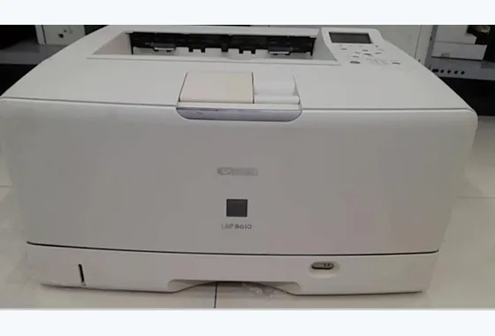
Canon LBP 8610
4.600.000đ
Máy in đã qua sử dụng Canon in trắng đen, khổ A3 A4 A5, máy in 1 mặt chuyên in bản vẽ khay giấy lên tới 250 tờ. In A4 18 trang/phút. A3 9 trang/phút. Bản in rõ đẹp.
-
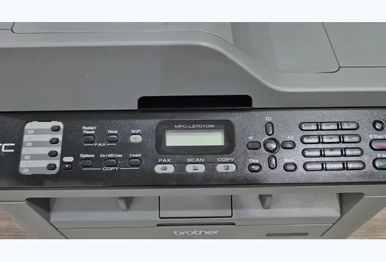
Brother MFC-L2701DW
3.650.000đ
Máy in cũ laser trắng đen Brother máy hỗ trợ in tốc độ nhanh kết hợp chế độ in 2 mặt tiện lợi, có photo scan và in không dây từ nhiều thiết bị điện tử khác, bản in rõ đẹp sắc nét, khổ giấy in a4a5.
-
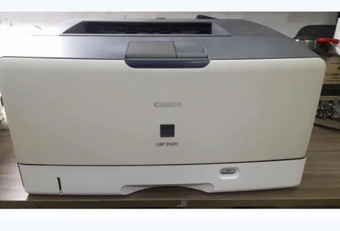
Canon LBP 3500
3.650.000đ
Máy in A3 Canon cũ máy hỗ trợ in 1 mặt, chuyên in bản vẽ cho bản in rõ đẹp độ bền cao.
-
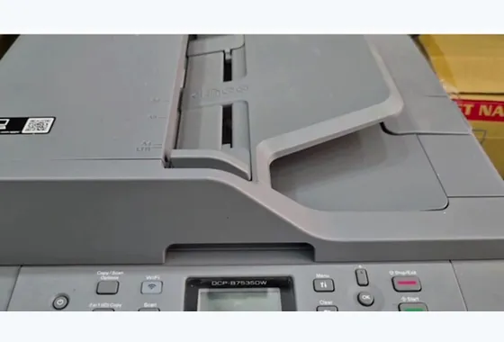
Brother DCP-B7535DW
3.600.000đ
Máy in cũ laser trắng đen, máy hỗ trợ in tốc độ nhanh và kết hợp chế độ in 2 mặt tiện lợi, bản in rõ đẹp sắc nét, dễ cài đặt và sử dụng, có thể in không dây từ nhiều thiết bị điện tử khác, khổ giấy in A4A5.
-
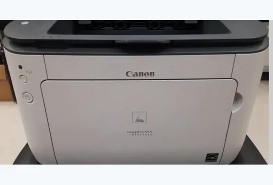
Canon LBP 6230dw
3.400.000đ
Máy in cũ laser in trắng đen Canon máy in tốc độ nhanh và hỗ trợ in 2 mặt thật tiện lợi, dễ cài đặt và sử dụng có kết nối không dây từ nhiều thiết bị điện tử khác, khổ giấy in a4a5.
-
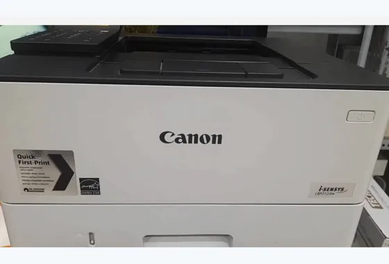
Canon LBP 212dw
3.400.000đ
Máy in cũ Canon laser trắng đen máy in tốc độ nhanh và in 2 mặt tiện ích, máy có kết nối không dây từ nhiều thiết bị điện tử khác, dễ cài đặt và sử dụng, bản in rõ đẹp sắc nét. Khổ giấy in a4a5.
-
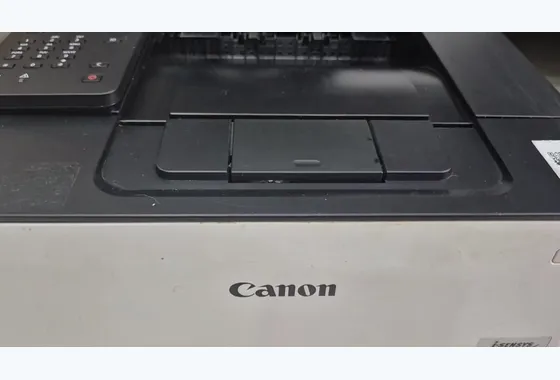
Canon LBP 223dw
3.400.000đ
Máy in laser cũ trắng đen Canon máy in tốc độ nhanh và có chế độ in 2 mặt tiện lơi, kết nối không dây tiện ích từ nhiều thiết bị điện tử khác, bản in rõ đẹp sắc nét dễ cài đặt và sử dụng. Khổ giấy in A4A5.
-
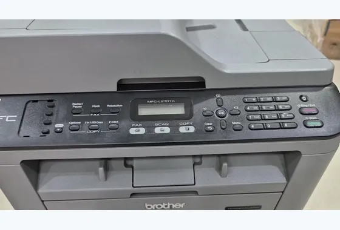
Brother MFC-L2701D
3.300.000đ
Máy in đã qua sử dụng laser trắng đen Brother máy in tốc độ nhanh và có chế độ in 2 mặt tự động, có photo scan khi cần dùng, bản in rõ đẹp sắc nét, dễ cài đặt và sử dụng, khổ giấy in A4A5.
-
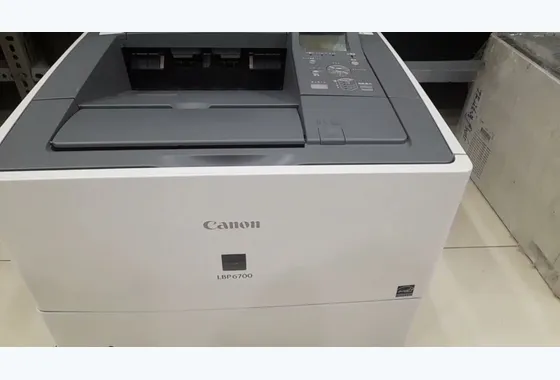
Canon LBP 6700
3.200.000đ
Máy in cũ Laser trắng đen, máy in nhanh khay giấy và hộp mực to, bản in rõ đẹp, dễ cài đặt và sử dụng, máy cơ chạy êm.
-
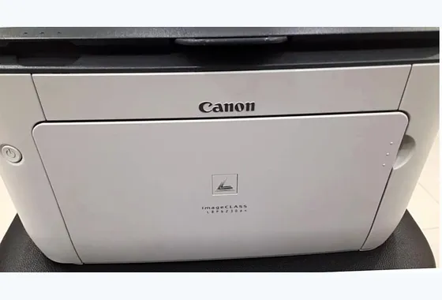
Canon LBP 6230dn
3.000.000đ
Máy in đã qua sử dụng laser trắng đen Canon máy in nhanh hỗ trợ in 2 mặt tiện lợi có thể kết nối network khi cần dùng, bản in rõ đẹp độ bền cao, dễ sử dụng và cài đặt.
-
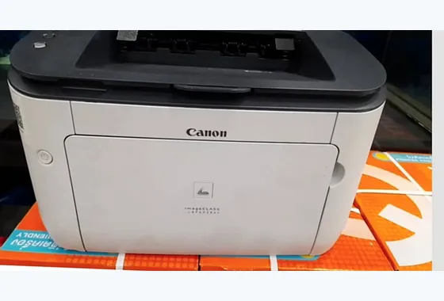
Canon LBP 6220dn
3.000.000đ
Máy in đã qua sử dụng đơn năng, máy in nhanh hỗ trợ 2 mặt tiện lợi, có thể in qua network khi cần, bản in rõ đẹp dễ sử dụng và cài đặt, chi phí nạp mực rẻ.
-
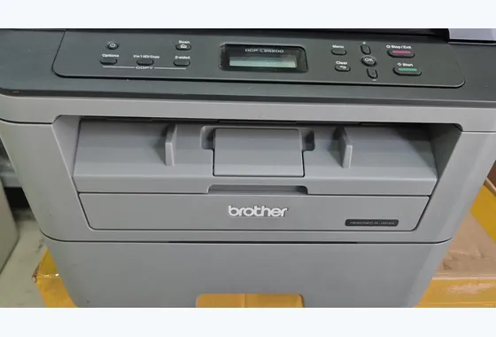
Brother DCP-L2520D
2.600.000đ
Máy in cũ laser trắng đen máy hỗ trợ in nhanh và có chế độ 2 mặt tiện dụng, photo scan khi cần thiết, bản in rõ đẹp sắc nét, dễ sử dụng và cài đặt khổ giấy in thông dụng A4A5.
-
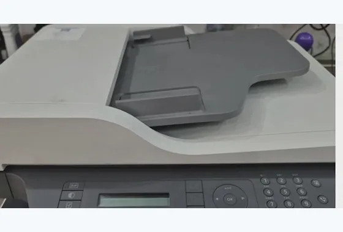
HP Laser MFP 137fnw
2.600.000đ
Máy in laser trắng đen đã qua sử dụng HP máy chỉ hỗ trợ in 1 mặt nhanh có photo scan khi cần, máy cơ chạy êm và mượt bản in rõ đẹp dễ sử dụng và cài đặt có thể in không dây từ điện thoại và nhiều thiết bị điện tử khác.
-
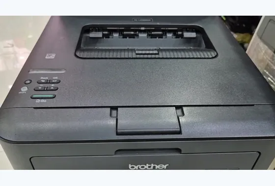
Brother HL-L2366DW
2.500.000đ
Máy in cũ laser trắng đen Brother máy in tốc độ nhanh và có chế độ in 2 mặt tự động, kết nối in không dây từ nhiều thiết bị điện tử khác, khổ giấy in A4A5 thông dụng.
-
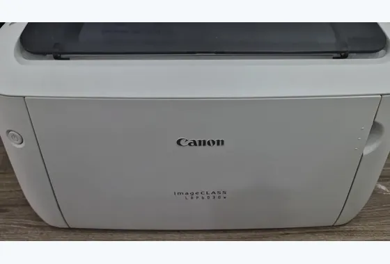
Canon LBP 6030W
2.400.000đ
Máy in cũ laser trắng đen Canon máy hỗ trợ in 1 mặt thiết kế nhỏ gọn phù hợp văn phòng nhỏ và gia đình, dễ cài đặt và sử dụng có kết nối wifi từ nhiều thiết bị điện tử khác.
-
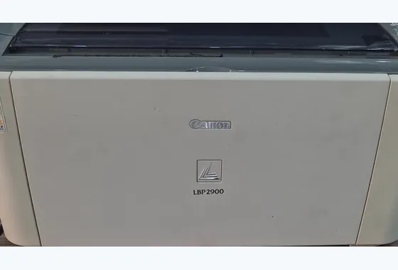
Canon LBP 2900
2.400.000đ
Máy in cũ laser trắng đen Canon máy chỉ hỗ trợ in 1 mặt, bản in rõ đẹp sắc nét độ bền cao, chi phí nạp mực thấp dễ cài đặt và sử dụng khổ giấy in thông dụng a4a5.
-
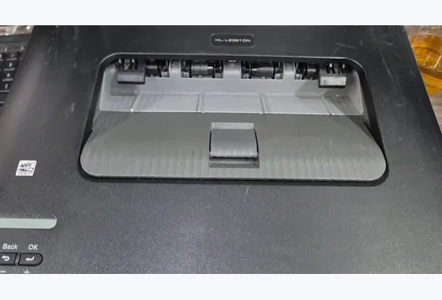
Brother HL-L2361DN
2.300.000đ
Máy in đã qua sử dụng Laser in trắng đen Brother máy in tốc độ cao hỗ trợ in 2 mặt tiện lợi, dễ cài đặt có thể kết nối network khi cần thiết, bản in sắc nét rõ đẹp, khổ giấy in A4A5 thông dụng.
-
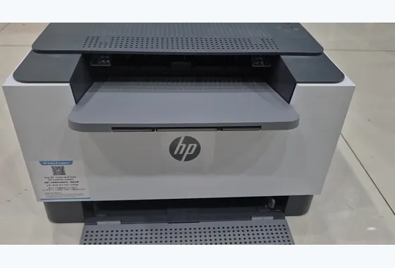
HP Laser MFP 211d
2.250.000đ
Máy in đã qua sử dụng HP Laser trắng đen máy in tốc độ nhanh có chế độ 2 mặt tự động, dễ cài đặt và sử dụng, bản in rõ đẹp sắc nét, chi phí nạp mực giá thấp khổ giấy in thông dụng A4A5.
-
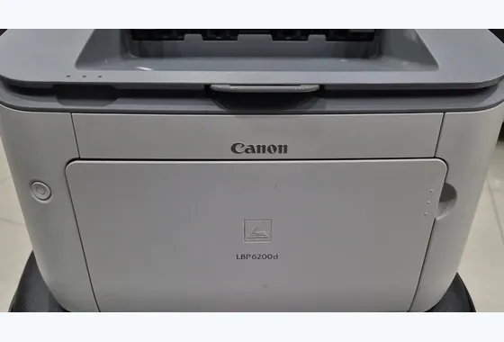
Canon LBP 6200d
2.150.000đ
Máy in đã qua sử dụng laser trắng đen máy in nhanh và có chế độ in 2 mặt tiện lợi, dễ cài đặt và sử dụng chi phí nạp mực thấp, bản in sắc nét độ bền cao, khổ giấy in a4a5.
-
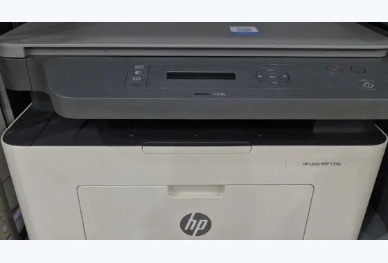
HP Laser MFP 135w
2.150.000đ
Máy in đã qua sử dụng HP laser trắng đen máy hỗ trợ in nhanh có kết hợp photo scan khi cần dùng, kết nối không dây từ nhiều thiết bị điện tử khác, dễ cài đặt bản in rõ đẹp, khổ giấy in thông dụng A4A5.
-
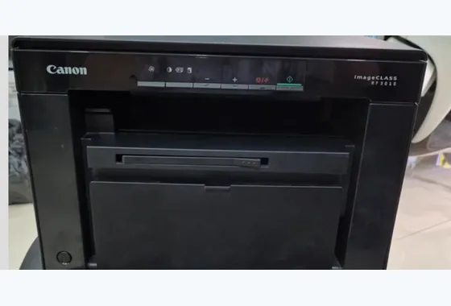
Canon MF 3010
2.150.000đ
Máy in Canon laser cũ máy hỗ trợ in 1 mặt nhanh, có photo scan bản in rõ đẹp sắc nét, dễ cài đặt và sử dụng , chi phí nạp mực thấp.
-
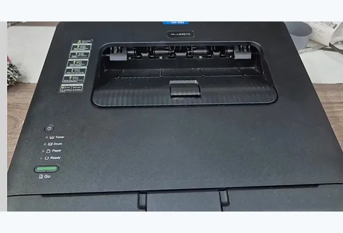
Brother HL-L2321D
2.100.000đ
Máy in laser trắng đen đã qua sử dụng Brother máy in tốc độ nhanh và có chế độ in 2 mặt tự động, dễ cài đặt và sử dụng, bản in sắc nét rõ đẹp, khổ giấy in thông dụng A4A5.
-
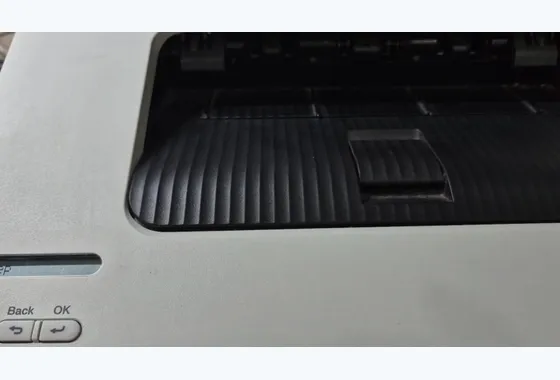
BROTHER B2100D
2.100.000đ
Máy in đã qua sử dụng laser trắng đen Brother máy hỗ trợ in nhanh và có chế độ in 2 mặt tiện lợi, bản in rõ đẹp sắc nét, dễ cài đặt và sử dụng, khổ giấy in thông dụng A4A5.
-
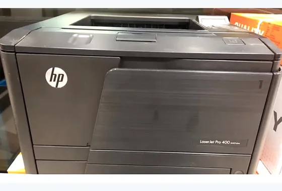
HP LaserJet Pro 400
2.050.000đ
Máy in đã qua sử dụng HP in nhanh và có chệ độ 2 mặt tự động, hộp mực to bản in đẹp và rõ, khổ a4a5 thông dụng.
-
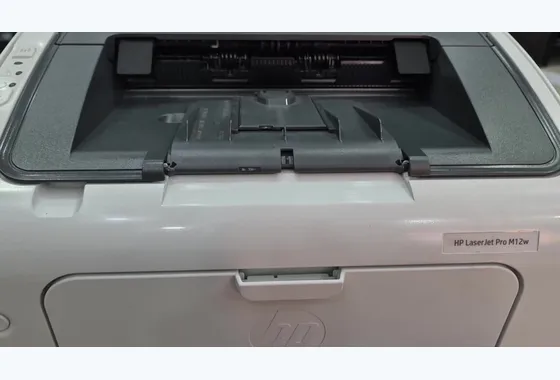
HP M12w
1.950.000đ
Máy in đã qua sử dụng HP Laser trắng đen máy chỉ hỗ trợ in 1 mặt nhanh và có kết nối không dây từ nhiều thiết bị điện tử khác, bản in rõ đẹp sắc nét, dễ sử dụng và cài đặt , khổ giấy in A4A5.
-
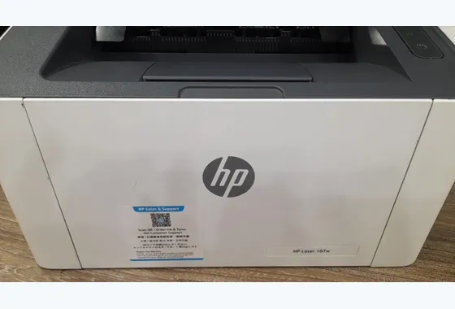
HP Laser 107w
1.900.000đ
Máy in đen trắng laser hỗ trợ in 1 mặt đơn năng, tối độ in 20 trang/phút A4. Máy thiết kế nhỏ gọn dễ cài đặt và sử dụng.
-
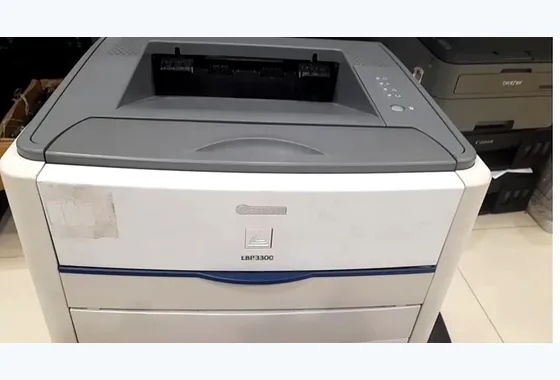
Canon LBP 3300
1.850.000đ
Máy in đã qua sử dụng Canon trắng đen máy hỗ trợ in 1 mặt và in nhanh bản in rõ đẹp dễ cài đặt và sử dụng hộp mực to chi phí nạp mực rẻ.
-
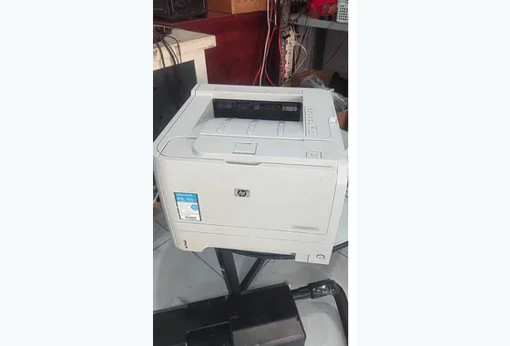
HP LaserJet P2035
1.800.000đ
Công nghệ in: Laser trắng đen Tốc độ in: Lên đến 30 trang/phút Độ phân giải: 600 x 600 dpi (HP FastRes 1200) Khổ giấy: A4, A5, Letter, Legal... Cổng kết nối: USB 2.0 (bản P2035N có thêm cổng mạng LAN) Khay giấy vào: 250 tờ + khay đa năng 50 tờ In đảo mặt: Thủ công Vật tư sử dụng Hộp mực: HP 05A (CE505A) Dung lượng: Khoảng 2.300 trang độ phủ tiêu chuẩn 5%.
-
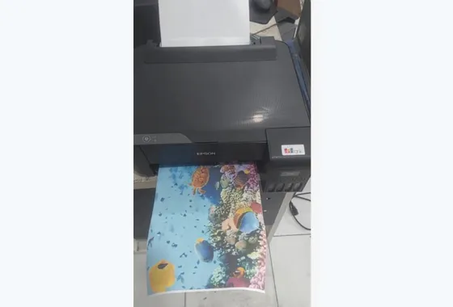
Epson L1210
1.800.000đ
Máy ngoại hình khá đẹp bản in sắc nét tốc độ in nhanh có thể in trắng đen và màu.
-
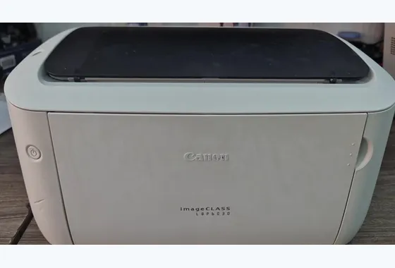
Canon LBP 6030
1.750.000đ
Máy in đã qua sử dụng laser in trắng đen Canon, máy nhỏ gọn phù hợp văn phòng nhỏ và gia đình, chỉ hỗ trợ in 1 mặt chi phí nạp mực giá rẻ, độ bền cao, full phụ kiện theo máy.
-
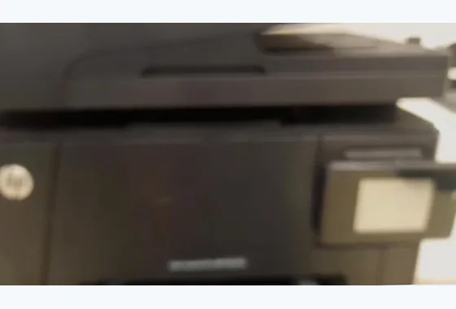
Hp Color Laser Pro M177fw
1.700.000đ
Máy đã qua sử dụng thanh lý cho AE trong nghề HP máy in màu hỗ trợ in 1 mặt có thể in không dây từ nhiều thiết bị.
-
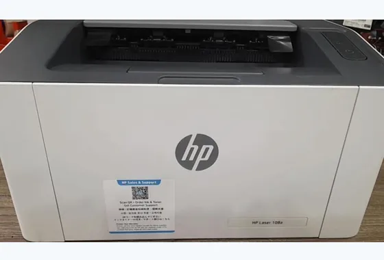
HP Laser 108a
1.650.000đ
Máy in đã qua sử dụng HP laser trắng đen máy chỉ hỗ trợ in 1 mặt, máy thiết kế nhỏ gọn bản in sắc nét rõ đẹp, dễ cài đặt.
-
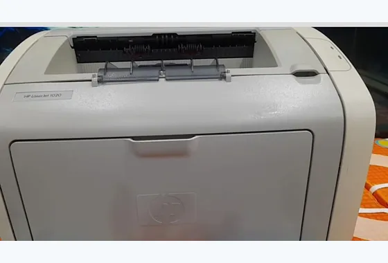
HP LaserJet 1020
1.600.000đ
Máy in cũ HP chỉ hỗ trợ in 1 mặt độ bền cao bản in rõ đẹp sắc nét , cơ máy chạy êm và mượt, dễ cài đặt và sử dụng. Chi phí nạp mực thấp.
-
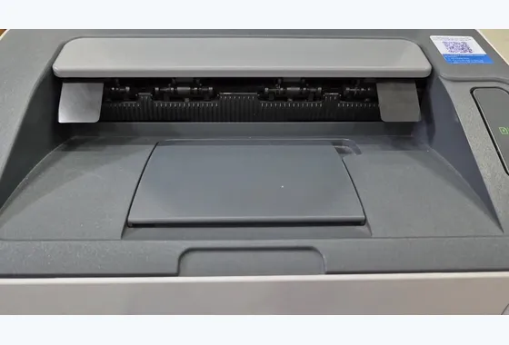
HP Laser 107a
1.600.000đ
Máy in cũ HP laser trắng đen máy thiết kế nhỏ gọn chỉ hỗ trợ in nhanh 1 mặt, dễ cài đặt và sử dụng bản in sắc nét rõ đẹp, cơ máy chạy êm và mượt độ bền cao, khổ giấy in A4A5 thông dụng.
-
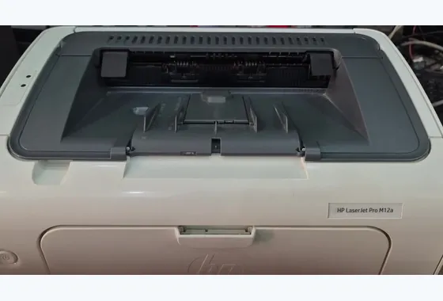
Hp M12a
1.550.000đ
Máy in cũ laser in trắng đen HP máy thiết kế nhỏ gọn hỗ trợ in 1 mặt nhanh, dễ cài đặt và sử dụng bản in rõ đẹp sắc nét, chi phí nạp mực thấp. Khổ giấy in A4A5.
-
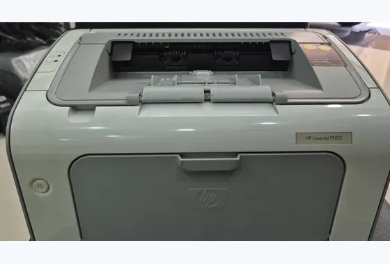
Hp 1102
1.550.000đ
Máy in laser trắng đen HP máy thiết kế nhỏ gọn hỗ trợ in 1 mặt bản in rõ đẹp sắc nét độ bền cao, máy cơ chạy êm và mượt, dễ cài đặt và sử dụng, chi phí nạp mực thấp. Khổ giấy in a4a5 thông dụng.
-
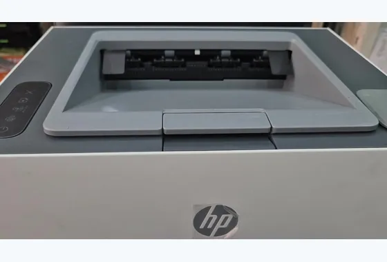
Hp Nerverstop 1000w
1.400.000đ
Máy in đã qua sử dụng HP Máy chỉ hỗ trợ in nhanh 1 mặt bản in sắc nét rõ đẹp hộp mực to, có kết nối in wifi từ nhiều thiết bị điện tử khác, dễ cài đặt khổ giấy in A4A5.
-
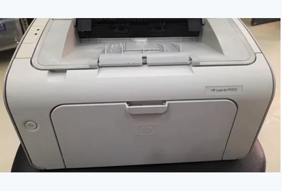
Hp 1005
1.350.000đ
Máy in đã qua sử dụng HP laser trắng đen máy nhỏ gọn dễ cài đặt và sử dụng hộp nạp giá rẻ, bản in sắc nét rõ đẹp khổ giấy in thông dụng A4A5,.
-
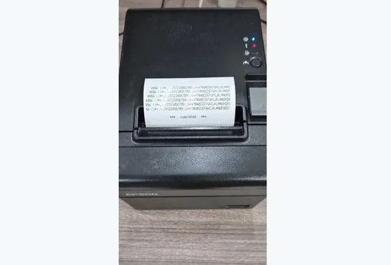
Epson T82
1.050.000đ
Máy in hóa đơn cũ Epson máy in có độ phân giải 150mm/s. Đây là dòng được nhà hàng siêu thị tin dùng vì tuổi thọ dao cắt bền, kết nối cáp USB.
-
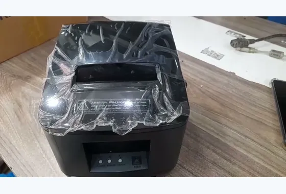
Apos 200
1.000.000đ
Máy in nhiệt phổ biến, dùng cho những mô hình kinh doanh nhỏ quán cafe và nhà hàng...
-
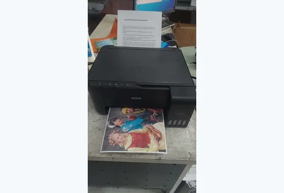
Epson L3150
900.000đ
Thanh lí ae thợ lấy linh kiện hoặc làm lại bán nha đầu thiếu tia màu đen tình trạng vẫn còn in ấn tốt.
-
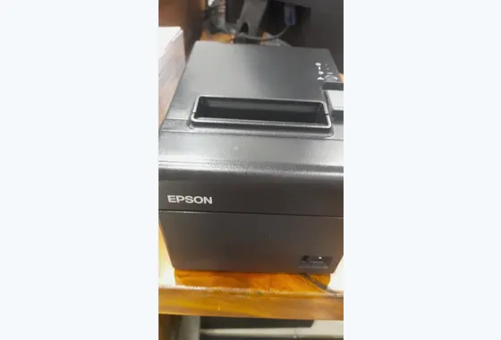
Epson M267E
850.000đ
Máy in nhiệt cũ Epson dùng trong siêu thị và quán cafe thông dụng khổ giấy in tối đa 72mm hoặc 80mm kết nối USB Tiện lợi dễ dùng.
-
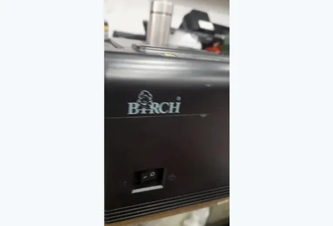
BIRCH CP Q3
850.000đ
Máy in nhiệt cũ lý tưởng dành cho nhà hàng và quán cafe, kết nối cổng USB. Khổ giấy in 80mm.
-
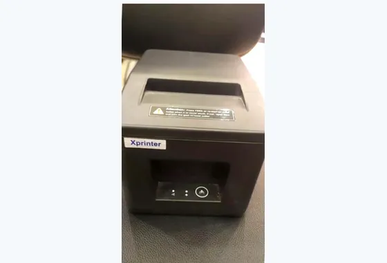
XPRINTER Q260
800.000đ
Máy in bill cũ máy nhỏ gọn khổ giấy in 80mm kết nối USB+LAN, FULL phụ kiện theo máy.
Bảng giá cập nhật 2026-08-24. Máy cũ mỗi cái một tình trạng — gọi 0934 393 550 để hỏi máy còn hay hết và xem ảnh thật của đúng cái máy đó.
Câu hỏi thường gặp
Máy in cũ bảo hành bao lâu ?
Bảo hành 3 tháng kể từ ngày giao. Trong thời gian đó máy hỏng do lỗi kỹ thuật thì chúng tôi sửa miễn phí, không sửa được thì đổi máy tương đương. Bảo hành không áp dụng cho hỏng hóc do rơi vỡ, vào nước hay dùng mực kém chất lượng gây tắc đầu in.
Có được xem máy chạy thử trước khi mua không ?
Có, và đây là điều chúng tôi luôn làm. Lúc giao máy sẽ cắm điện in thử vài trang ngay trước mặt khách để kiểm tra bản in đậm đều, không sọc, kéo giấy êm. Khách xem xong ưng thì mới nhận máy.
Mua máy cũ về nạp mực có tốn kém hơn máy mới không ?
Không. Chi phí mực phụ thuộc vào dòng máy chứ không phải máy cũ hay mới. Các dòng trong bảng đều là dòng phổ thông, mực và linh kiện bán sẵn, giá nạp mực bằng đúng giá niêm yết của tiệm.
Máy trong bảng hết thì có máy khác không ?
Có. Kho máy thay đổi liên tục nên bảng này chỉ là những máy đang có lúc cập nhật. Gọi hỏi dòng máy mình cần, nếu chưa có sẵn thì chúng tôi tìm và báo lại trong vài ngày.
Có nhận thu mua máy in cũ không ?
Có. Chúng tôi thu mua máy in cũ mọi tình trạng, kể cả máy hỏng để lấy linh kiện. Gọi mô tả tình trạng máy là báo giá được ngay, đến tận nơi xem và trả tiền luôn.